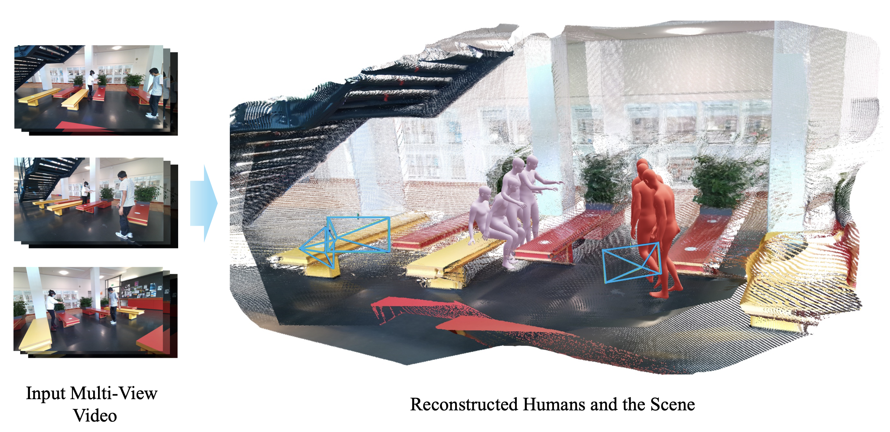

|
Minhyuk Hwang I'm an undergraduate student in Computer Science and Engineering at Seoul National University, where I work as a research intern advised by Prof. Jaesik Park. I'm interested in generative models. |

|
Research |
|
 |
Coherent Human-Scene Reconstruction from Multi-Person Multi-View Video in a Single Pass
Sangmin Kim, Minhyuk Hwang, Geonho Cha, Dongyoon Wee, Jaesik Park arXiv, 2026 project / paper |
|
Website template from Jon Barron. |